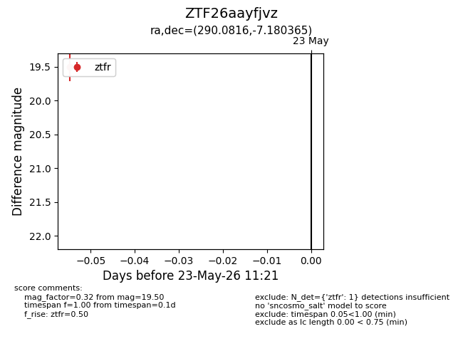
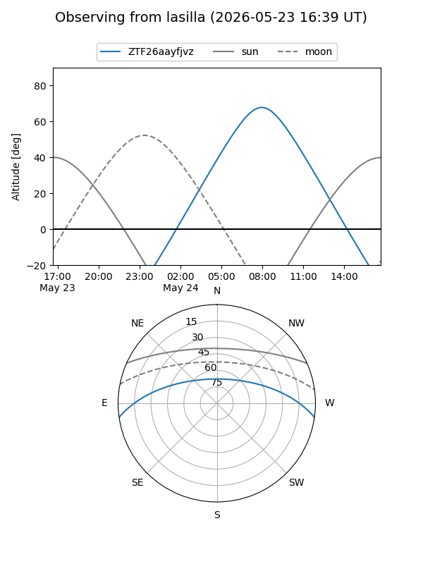
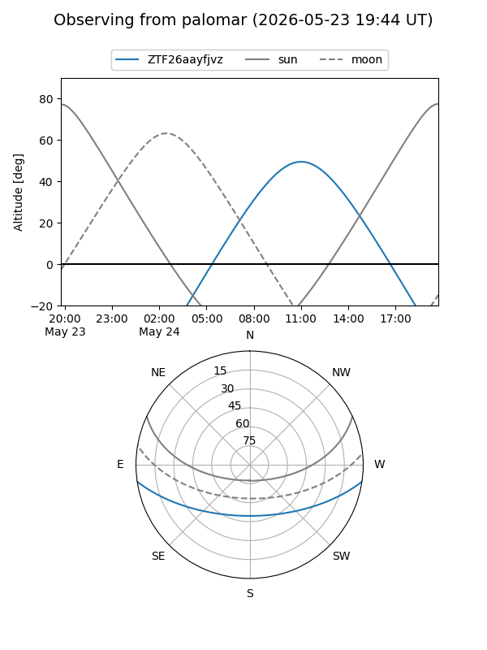

ZTF26aayfjvz
Target ZTF26aayfjvz at 2026-05-23 11:22
Aliases and brokers:
lsst-FINK: link
lsst-Lasair: link
lsst-ALeRCE: link
ztf-FINK: link
ztf-Lasair: link
ztf-ALeRCE: link
alt names
ZTF26aayfjvz (ztf,fink_ztf)
Coordinates:
equatorial (ra, dec) = 290.0816,-7.18037
equatorial (HMS+DMS) = 19:20:19.59,-07:10:49.32
galactic (l, b) = (29.7704,-9.67179)
Flags:
Photometry:
last ztfr=19.50
1 ztfr detections
Lightcurve

Visibility


Additional plots